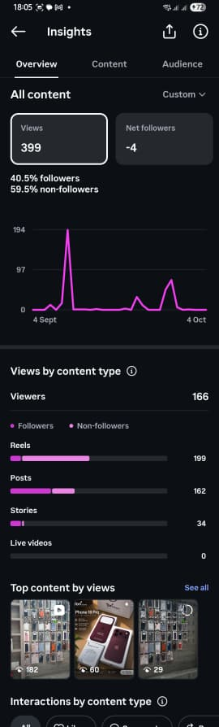
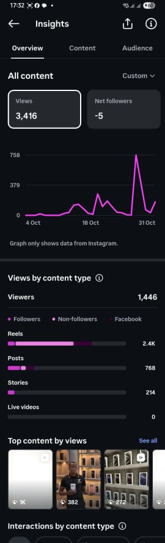
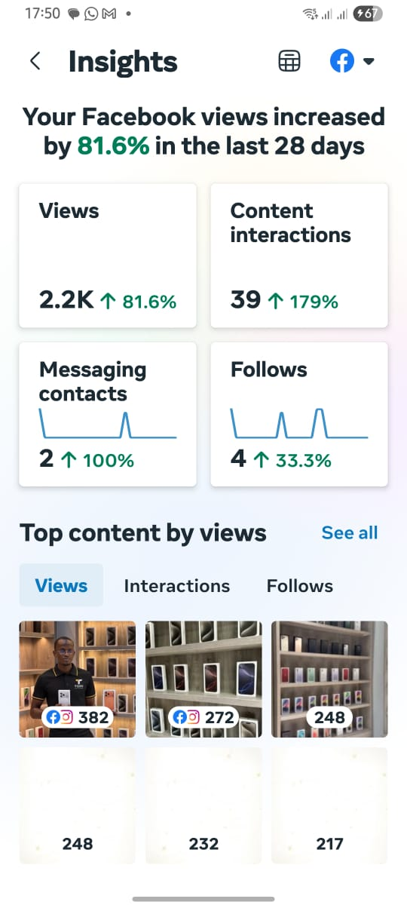

13 122
Instagram views a day for Tori Stores, in four weeks. 4 leads by DM, 2 sales.
Case studyPortfolio 26
Digital Marketing & Content
I plan, make and report on daily content for Zambian businesses. I use AI to move fast and my own review to keep it accurate.
Vantage Digital SolutionsLusakaEnglish · Bemba · Nyanja
13 122
Instagram views a day for Tori Stores, in four weeks. 4 leads by DM, 2 sales.
Case study78 posts
A 13-week content calendar across five pillars, with client approval on every post.
See the planChecked
AI drafts fast. I check every claim before it goes to the client.
How I workFrom irregular posting to daily reach: Tori Stores' Instagram went from about 13 views a day to about 122 in four weeks, and the work produced 4 leads by DM, 2 of which became sales.
Tori Stores posted irregularly. In the 30 days before I started, its Instagram averaged about 13 views a day and lost 4 followers.
Average Instagram views a day. Before: 4 Sep to 4 Oct (30 days). After: 4 to 31 Oct (28 days).
4 leads · 2 sales
All four leads came by DM, and two of them became sales.
Reach grew about 9 times, but followers did not. The calendar's calls to action said "WhatsApp us", yet every lead arrived by DM. Next I would point calls to action at DM, add a series format worth following, and log the source of every enquiry.



A quick poll from Week 1 of the calendar, part of the community pillar. Its job is simple: get people to comment, which tells the algorithm the page is worth showing and tells the store what customers worry about.
Source: Instagram and Facebook Insights, shared with the client's permission. The "before" window ends on 4 October, the day I started. Averages are rounded.
A 13-week plan, built to be approved: every post has a hook, a call to action, the assets it needs, a status and a client approval.
| Date | Pillar | Idea | Status |
|---|---|---|---|
| Mon 12 Oct | Education | 5 checks before buying a second-hand iPhone (carousel) | Posted |
| Tue 13 Oct | Product | Store tour: walk the shelves (short video) | Posted |
| Wed 14 Oct | Trust | Meet the team and the promise of original iPhones | Posted |
| Thu 15 Oct | Offers | Welcome offer graphic | Posted |
| Fri 16 Oct | Community | Poll: your biggest phone headache? | Posted |
| Sat 17 Oct | Product | Colour line-up: "Which one are you?" (short video) | Posted |
Independence Day, month-end payday, Black Friday, Christmas and the back-to-school period each have their own week, so offers land when people are ready to buy.
DM and WhatsApp enquiries, store visits and sales, reach and engagement by pillar, and follower growth, reviewed every week.
Two ideas from the Tori Stores calendar, "5 checks before buying a second-hand iPhone" and "How to spot a fake iPhone", were produced as vertical videos with Claude and checked by me for accuracy before client approval.
Three claims in a draft of the fake-iPhone video were too absolute for a buyer to rely on.
| In the draft | Why it can mislead | Safer wording |
|---|---|---|
| "If Apple says it's invalid, it's a fake." | A mistyped serial number gives the same result. | If Apple can't find the serial, check the number again and ask us to verify it with you. |
| Software test: open the App Store and hold the side button for Siri. | Not a reliable way to identify a fake. | Drop it, or show it as one small warning sign among others. |
| Genuine versus Fake screen comparison. | A dim, washed-out display can also be an old or damaged genuine screen. | Treat a dim screen as a reason to check further, not proof. |
| Check | What I look for |
|---|---|
| Accuracy | Every claim has a source, and absolute words (always, never, fake) are justified. |
| Tone | Helpful and honest, never scaring the buyer. |
| Cultural context | Zambian prices, phone habits, and WhatsApp or DM contact. |
| Brand fit | Client colours, wording and contact details. |
Templates I adapt for each client. Square brackets mark what changes.
Plan the calendarYou are a social media strategist for a [business type] in [city]. Build a [4]-week content calendar with five pillars (product, offers, education, trust, community), six posts a week, and for each post a hook, a call to action and the assets needed. Use only the facts below. Mark anything I must confirm with the client as [to confirm]. Facts: [stock, offers, hours, policies].
Draft from factsWrite a [carousel / 60-second video script] on [topic] for [audience]. Use only the facts I paste below. If something isn't covered, say so instead of guessing. Tone: honest, helpful, plain English. End with this call to action: [CTA]. Facts: [my research].
Fact-checkReview this script line by line. List every claim and mark it verifiable, overstated or unsupported. Flag absolute words such as always, never and fake. Suggest safer wording for anything overstated.
RepurposeTurn this carousel into a vertical video script of about 60 seconds: a hook in the first three seconds, one idea per scene, on-screen text under eight words, and a closing call to action.
AI makes the first draft fast. My value is the second pass: finding the claims that could mislead a buyer and fixing them before they are published.
Vertical explainers for Tori Stores, made with Claude, researched and reviewed by me, plus my own voice-over introduction at the top of this page.
I'm a Lusaka-based digital marketer with a 2025 Digital Marketing certificate, from the University of Zambia.
My background is in sales and marketing, so I judge content by the enquiries and sales it produces, not only by views. I run Vantage Digital Solutions, a small studio that manages social media and content for businesses. I work in English, Bemba and Nyanja.